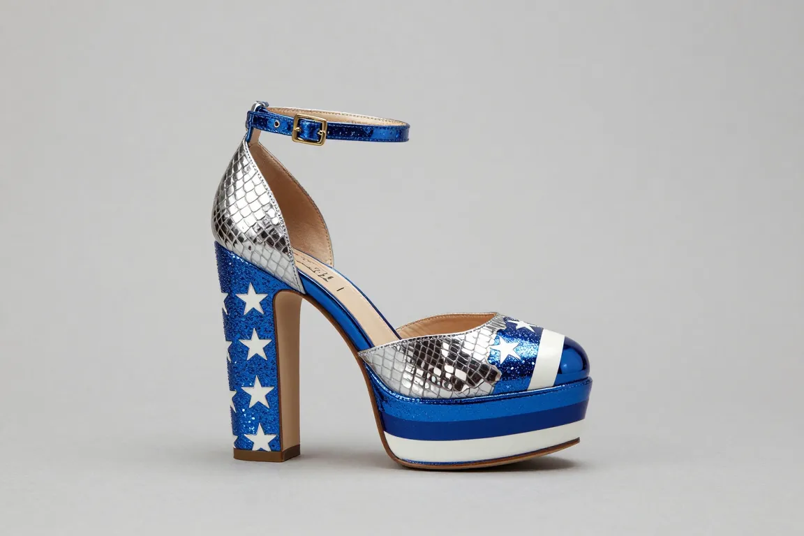

Den hevede skoen fra glamrock og disco. Den har en plattformsåle på 5 til 10 cm, en tykk hæl og en høylytt overdel i lakk, glitter, semsket skinn eller slangeprint.

Kjerneidé
En glam-sko legger til høyde og støy: en tykk plattform og en skinnende overdel gjør bæreren høyere, høyere i lyd og ikke helt virkelig.
Designprinsipper
Hev sålen 5 til 10 cm ved tåen, med en hæl 2 til 4 cm høyere enn plattformen.
Skjær plattformen i lag av kork, tre eller skum, og dekk dem med skinn eller stoff.
Bruk en avrundet eller firkantet tå, og en bred, solid hæl.
Dekk overdelen i et høylytt materiale: lakk, glitter, speil, slangeprint eller metallic.
Legg til stjerner, striper eller en stablet såle i to eller tre farger.
Lukk skoen med en tykk ankelstropp, en spenne eller en høy snøreskaft.
Tilpass plattformkanten til overdelen i farge, eller kontrastér den med vilje.